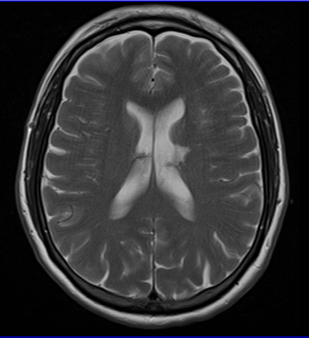

Ficha del catálogo
Infarto lacunar
- Sistema
- Nervioso
- Modalidad
- RM
- Región
- Ganglios basales, cápsula interna, tálamo y protuberancia
- Dificultad
- Intermedio
El infarto lacunar es una lesión isquémica pequeña y profunda producida por oclusión de una arteria perforante, en el contexto de enfermedad de pequeño vaso asociada a hipertensión arterial y diabetes. Pese a su tamaño reducido puede causar déficit importante cuando asienta en vías compactas como la cápsula interna o la protuberancia.
Técnica
Resonancia magnética de encéfalo con difusión y mapa de coeficiente aparente, FLAIR, T2 y secuencia sensible a susceptibilidad. La difusión distingue la lesión aguda de las lagunas antiguas, que en FLAIR y T2 tienen aspecto muy similar.
Qué observar
- Foco pequeño con restricción a la difusión en territorio de arterias perforantes
- Localización en ganglios basales, cápsula interna, tálamo, corona radiada o protuberancia
- Ausencia de afectación cortical y de efecto de masa
- Lesiones antiguas cavitadas con halo de gliosis en FLAIR
- Hiperintensidades confluentes de la sustancia blanca periventricular
- Microsangrados de distribución profunda en la secuencia de susceptibilidad
Hallazgos
Lesión redondeada u ovalada de pequeño tamaño, hiperintensa en difusión con descenso del coeficiente aparente en la fase aguda, hiperintensa en T2 y FLAIR y sin realce relevante ni efecto de masa. Con la evolución se cavita y adopta señal similar a la del líquido cefalorraquídeo, con un anillo periférico hiperintenso en FLAIR por gliosis. Suele acompañarse de leucoaraiosis, espacios perivasculares dilatados y microsangrados profundos.
Perlas
Un espacio perivascular dilatado y una laguna antigua se parecen mucho en T2, pero el espacio perivascular sigue el trayecto de un vaso, tiene bordes lisos y se suprime por completo en FLAIR sin halo de gliosis. Solo la difusión permite afirmar que una lesión pequeña y profunda es responsable del cuadro clínico actual.
Diagnóstico diferencial
- Espacio perivascular dilatado
- Sigue el trayecto vascular, se suprime completamente en FLAIR y carece de halo de gliosis y de restricción.
- Placa desmielinizante
- Predomina en sustancia blanca periventricular con disposición perpendicular a los ventrículos y afecta cuerpo calloso y fosa posterior.
- Infarto embólico pequeño
- Asienta en la unión corticosubcortical y suele ser múltiple y de distintos territorios, lo que sugiere fuente cardiaca o arterial proximal.
- Microsangrado antiguo
- Solo se ve en la secuencia de susceptibilidad, con pérdida de señal marcada y sin correlato en T2 ni en difusión.
Simuladores
- Espacios perivasculares prominentes en la base de los ganglios basales
- Artefacto de susceptibilidad en la protuberancia por la interfase con el hueso
- Focos de gliosis inespecífica en pacientes de edad avanzada
Por modalidad
- TC
- Tiene baja sensibilidad para lesiones pequeñas y profundas, sobre todo en la fosa posterior, y suele resultar normal en la fase aguda.
- RM
- La difusión identifica la lesión aguda y el conjunto de secuencias documenta la carga global de enfermedad de pequeño vaso.
Protocolo
Difusión con mapa de coeficiente aparente, FLAIR, T2, susceptibilidad y angiografía por resonancia intracraneal sin contraste (el contraste no suele ser necesario salvo duda diagnóstica). Conviene informar además la carga de leucoaraiosis y de microsangrados por su valor pronóstico.
Clasificación
Se describe dentro de los marcadores de enfermedad de pequeño vaso, que incluyen el infarto subcortical reciente, la laguna de origen vascular, las hiperintensidades de sustancia blanca, los espacios perivasculares dilatados, los microsangrados y la atrofia.
Errores frecuentes
- Confundir espacios perivasculares dilatados con lagunas isquémicas
- Atribuir el cuadro clínico a una laguna antigua por no realizar difusión
- Olvidar la búsqueda de fuente embólica cuando la lesión no está en territorio perforante

infarto lacunar pequeño vaso arterias perforantes difusión leucoaraiosis microsangrados